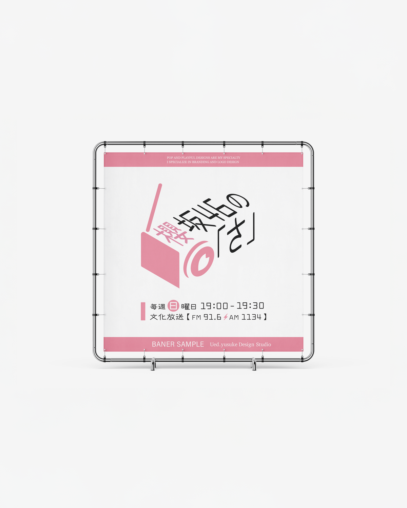
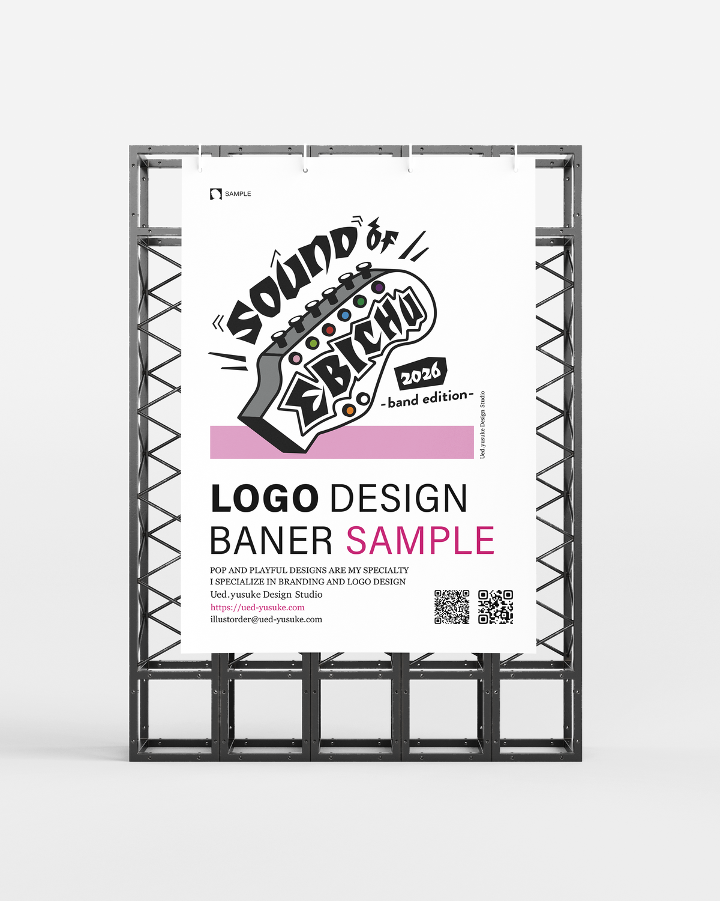
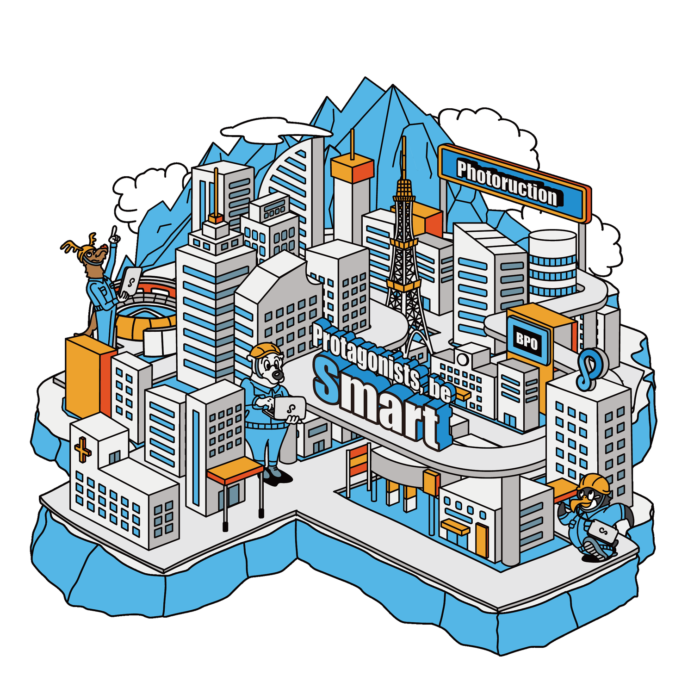
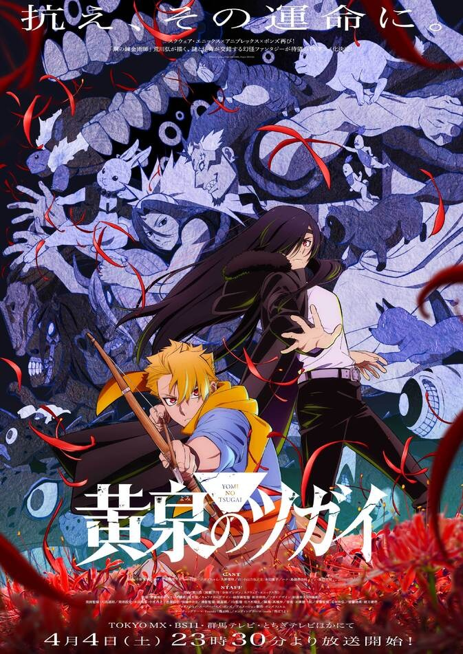
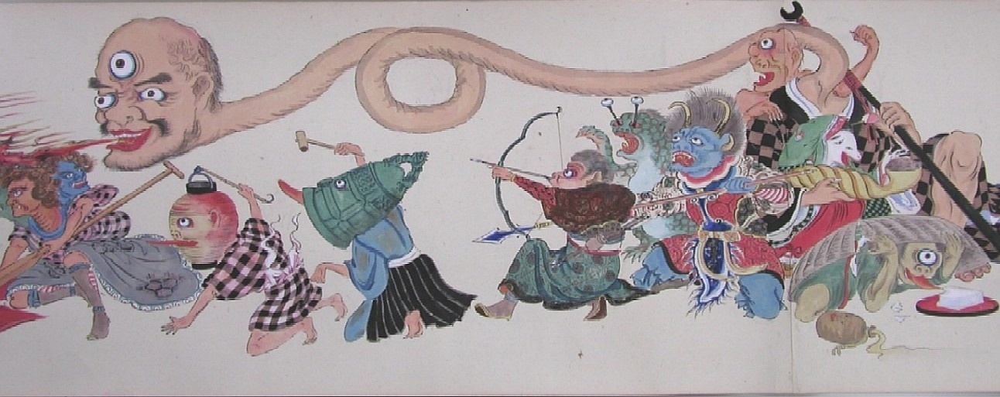
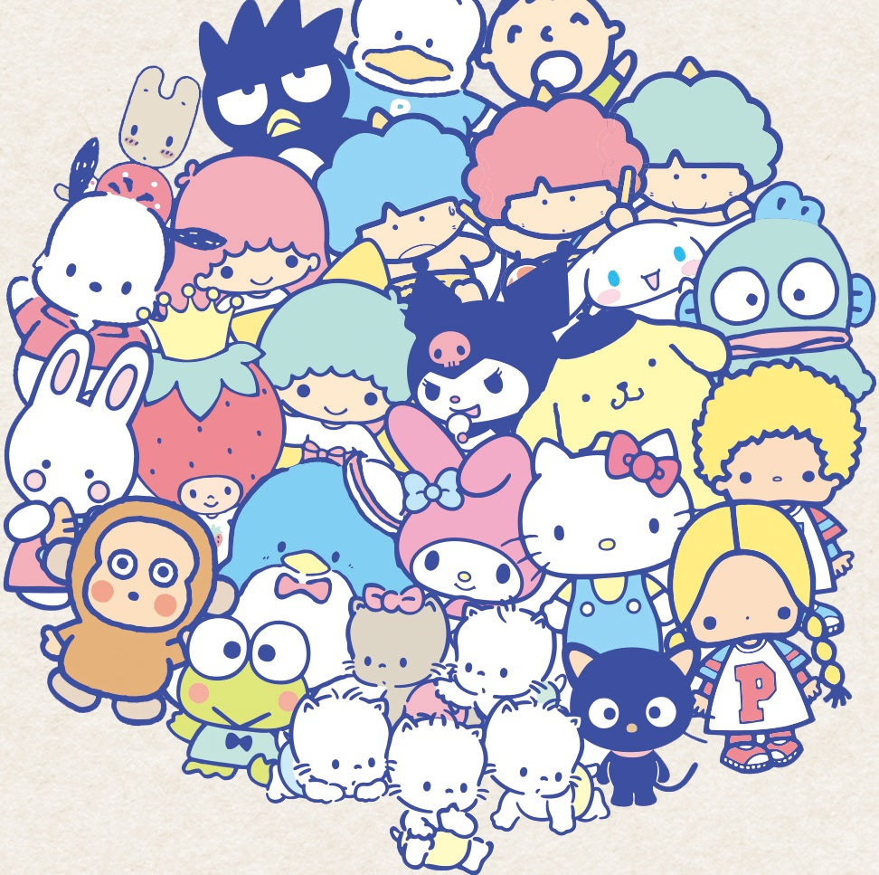
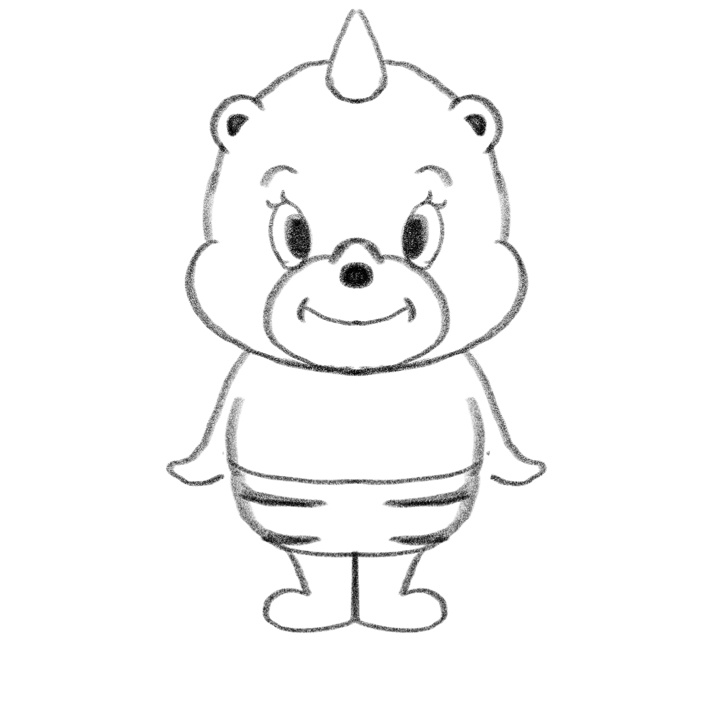

株式会社イルミナ 就労移行支援 │ Ued.Yusuke Design Studio ・ 上田ゆうすけ
60分で、デザインの“見方”と“つくり方”を。
About Me ・ 上田ゆうすけ
Selected Work 01
番組の世界観を、ポップに。ロゴ・キービジュアル・バナーを担当。

Selected Work 02
バンド編のロゴデザイン。遊び心のあるタイポ×イラストで“らしさ”を。

Visualize the Quirks ・ 理念
その人・その会社にしかない個性（クセ）を抽出して、見える形にする。
Selected Work 03
建築産業の施工管理サービス。アイソメトリック風のデザインで、クライアントへのリスペクトを込めて。

What You'll Walk Away With
特別な人だけのものじゃない、と知る。
「なぜ良いか」を自分の言葉で言える。
自分の手でキャラを1つ完成させる。
It's Not About You
Good Design Has a Reason
センスに見えるものの裏には、ちゃんと理由がある。
だから、なぜそうしたかを言葉にできる。
赤＝危険。色そのものに意図がある。
文字を読ませず、形と色で瞬時に伝える。
一番の決め手だから、大きさで推す。
The Eye Moves On Its Own
Z型 — 横組みレイアウトの基本動線
Design Is Storytelling
TVアニメ『黄泉のツガイ』のKVを、色と構図から読み解きます。
色ひとつ、構図ひとつに、物語の意味が宿っている。
KV Analysis 01 ・ 色

要所にだけ置かれ、真っ先に目を引く。
情熱・愛 ⇄ 血・犠牲
魔除け・生命。「赤ちゃん」＝昇る朝日＝“始まり”。
KV Analysis 02 ・ 補色
赤の補色（色相環の反対）。並ぶと互いが際立つ。
生命・始まりの赤の対極。色で対立を語る。
KV Analysis 03 ・ 構図

東洋の絵巻で“和”を強調。
魔が練り歩く、夜の行列。
昼と夜が曖昧になる瞬間＝ツガイの世界。
KV Analysis 04 ・ 視線と配色
Z型の視線誘導で、真っ先に主役へ。
踏切・工事現場と同じ。緊張感を予告。

The Power of Subtraction
ハローキティには、口がありません。だからこそ、誰の気持ちにも重なる。足すより、引く勇気。
小さくても遠くても分かる。
点の目・小さな口。崩れない。
遠目でも“その子”と分かる。
親しみ＋物語が、愛着を生む。
What Is a Character?
ただの“かわいい絵”ではありません。
ブランドの想いを、ひとつの姿に託した「顔」です。
言葉より速く、雰囲気や価値観を伝える。
シンプルな形は記憶に残り、好きになってもらえる。
名前・設定・性格があると、応援したくなる。
Analyze the Brand ・ イルミナを読む
ITで共生社会を照らし、多様な個の可能性を広げる。
革新・共感・寄り添い・学習・協調。あたたかく前向き。

Trace the Rough ・ お題
Illustratorに読み込み、うすく表示する。
ペンと図形で、輪郭を清書していく。
キレイな線＋色で、キャラクター完成。
Meet Your Canvas
絵を描く“紙”。この中に作る。
選択・図形・ペン・文字。今日はここだけ。
パーツの“重なり順”を管理する。
Shapes Are Your Building Blocks
長方形 ・ 楕円 ・ 多角形（三角）
ドラッグで四角。角を丸めれば“やわらかさ”。
顔・体・目のベース。丸は親しみの基本。
光・耳・スパーク。とがりでアクセント。
The Pen Tool, Demystified
点（アンカー）を打つ。点と点を直線でつなぐ。
ハンドルが出て、なめらかな曲線に。
最初の点をクリックで“閉じた形”が完成。
Combine and Subtract
重なりを1つの形に“合体” ／ Altで“型抜き”
合体したいパーツをまとめて選択。
ドラッグでつなぐと1つの形に。Shift+M
Altを押しながらで、その部分を削除。
Trace & Clean Up
→キーで、ラフの上に清書が1つずつ重なります。
The Final Touches
色は2〜3色に絞る。イルミナ＝光なら暖色＋差し色が◎。
目と口の位置を少し動かすだけで、性格が変わる。
名前と設定を付けた瞬間、それは“キャラクター”になる。
Three Things to Keep
デザインはアートじゃない。伝えるための設計。
良いデザインには、必ず説明できる理由がある。
伝わるより刺さる。整えるより残す。正解よりらしさ。
上手い下手より、まず「なぜ？」を持つこと。それがデザイナーの第一歩。
Thank You
今日描いたルミィは、あなたが最初につくった“らしさ”の証拠です。
これからも、たくさんつくってください。